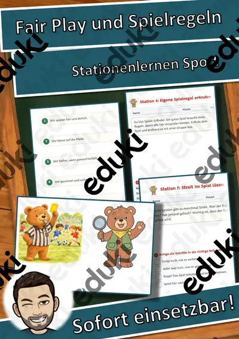
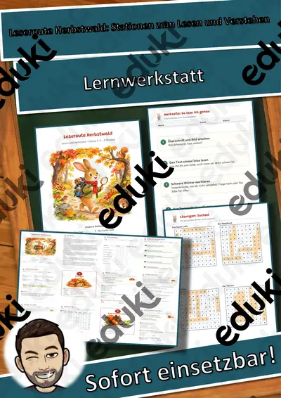
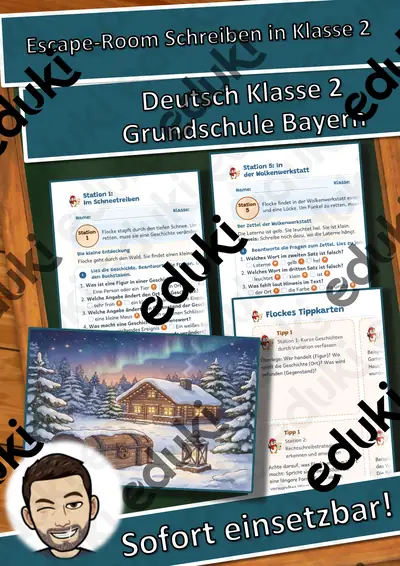

Kinderyoga: Stationenlernen mit 12 Stationen
Kinderyoga: Stationenlernen mit 12 Stationen für Klasse 1 bis 4Auf 23 Seiten bringt dieses Stationenlernen ruhige Bewegung in den Sportunterricht. An zwölf Stationen probieren die Kinder einfache Tier- und Naturhaltungen wie Berg, Baum, Katze, Hund oder Schmetterling aus. Jedes Stationsblatt zeigt die Haltung im Bild, beschreibt sie in vier kurzen Schritten und gibt einen Atemhinweis sowie einen Satz „Achte auf …“. Die Haltungen sind bewusst einfach und sicher gewählt.
Enthalten sind:12 Stationsblätter mit Bild, Schritt-für-Schritt-Anleitung, Atemhinweis und Achtsamkeitshinweis- Yoga-Regeln für die Kinder- Laufzettel mit Name, Klasse und Datum- Entspannungsgeschichte zum Vorlesen- Reflexionsblatt und Urkunde- Lehrerinfo mit Sicherheitshinweisen und Aufbauplan
Geeignet für Stationenlernen, Bewegungspausen und den Ausklang einer Sportstunde. Alle Texte sind Eigenentwicklungen, die Illustrationen sind KI-generiert. Die Übungen sind reine Bewegungs- und Entspannungsübungen. Das Material ist für Ihre eigene Klasse bestimmt.
Ähnliche Materialien

Fair Play und Spielregeln: Stationenlernen Sport

Was bringt Bewegung dem Körper? - Homeschooling

Yoga Lückentext mit Wortspeicher Hörverstehen und Suchsel

Leseroute Herbstwald: Stationen zum Lesen und Verstehen

Escape-Room Schreiben in Klasse 2 – Deutsch Klasse 2 Grundschule: 6 Stationen, 2 Schlösser

Escape-Room Schreiben – Deutsch Klasse 2 Grundschule: 6 Stationen, 2 Schlösser

Escape-Room Lesen und Medien verstehen – Deutsch Klasse 2 Grundschule: 6 Stationen, 2 Schlösser